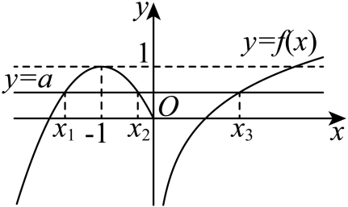

示例学校高二周测（7） Q14
题目
14．已知函数f(x)={-x^2-2x,x≤0lnx,x>0，函数g(x)=f(x)-a有三个零点x_1,x_2,x_3，则x_1⋅x_2⋅x_3的取值范围为_______.
答案与解析
14．[0,e)【详解】当x≤0时，f(x)=-x^2-2x=-(x+1)^2+1，为开口向下，对称轴为x=-1的抛物线，因为g(x)=f(x)-a有三个零点x_1,x_2,x_3，不妨令x_1<x_2<x_3，
所以g(x)=f(x)-a=0有三个不相等的根x_1,x_2,x_3，即y=f(x)与y=a图象有三个不同的交点x_1,x_2,x_3，作出图象，如图所示. 所以0≤a<1，因为x_1,x_2为方程-x^2-2x=a，

即x^2+2x+a=0的两个不相等实根，所以x_1⋅x_2=a，因为x_3为方程lnx=a的根，所以x_3=e^a，
所以x_1⋅x_2⋅x_3=a⋅e^a. 令h(x)=xe^x,x∈[0,1)，
则h^'(x)=e^x+xe^x=(1+x)e^x>0，所以h(x)在[0,1)上单调递增，所以h(0)≤h(x)<h(1)，
即0≤h(x)<e，所以x_1⋅x_2⋅x_3=a⋅e^a∈[0,e).
结构化摘要
{
"question_id": "szzx2024g2week7_q014",
"answer": "[0,e)",
"assets": [
{
"id": "img001",
"type": "image",
"rel_id": "rId10",
"source": "word/fontTable.xml",
"path": "assets/szzx2024g2week7_q014_image_01.png"
}
],
"ole_objects": [],
"extraction": {
"source_paragraph_range": [
39,
46
],
"solution_paragraph_range": [
29,
35
],
"formula_count": 87,
"image_count": 1,
"ole_count": 0,
"quality_flags": [
"contains_images",
"contains_omml"
]
}
}